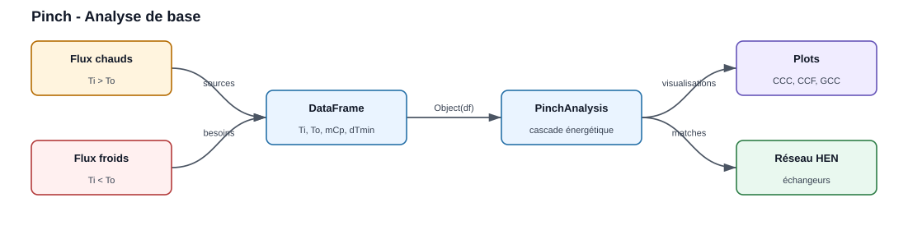
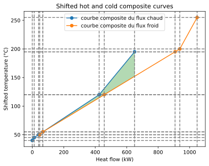
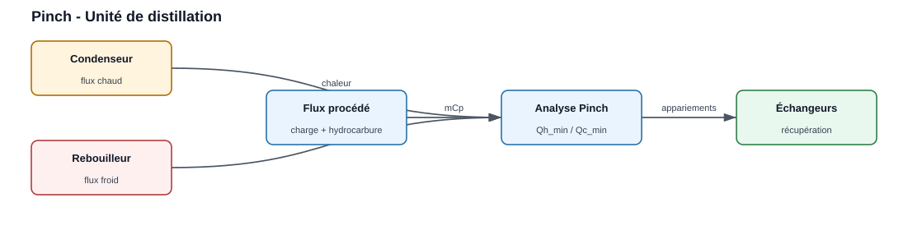
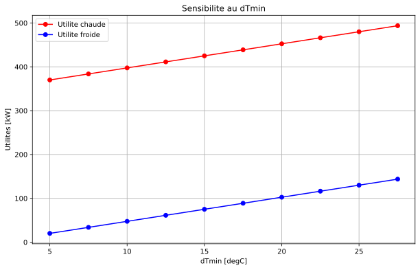

Pinch Analysis

Les hot and cold streams sont structurés in un DataFrame, then l’analyse produit les courbes, les utilités minimales et les appariements d’échange.
import pandas as pd
from PinchAnalysis import PinchAnalysis
# Créer un DataFrame avec les flux thermiques
# Ti/To : températures initiale/finale [°C]
# mCp : débit de capacité thermique [kW/K]
# dTmin2 : ΔTmin/2 pour chaque flux [K]
# integration : inclure le flux dans l'analyse
# Les colonnes 'id' et 'name' sont requises par PinchAnalysis.Object
df = pd.DataFrame({
'id': [1, 2, 3, 4],
'name': ['H1', 'H2', 'C1', 'C2'], # 2 flux chauds, 2 flux froids
'Ti': [200, 125, 50, 45],
'To': [50, 45, 250, 195],
'mCp': [3.0, 2.5, 2.0, 4.0],
'dTmin2': [5, 5, 5, 5],
'integration': [True, True, True, True]
})
# Créer l'objet d'analyse
pinch = PinchAnalysis.Object(df)
# Accéder aux résultats (valeurs réelles pour ce jeu de flux)
print(f"Température de pincement : {pinch.Pinch_Temperature} °C") # 55
print(f"Utilité chaude minimale : {pinch.Heating_duty} kW") # 397.5
print(f"Utilité froide minimale : {pinch.Cooling_duty} kW") # 47.5
print(f"Chaleur récupérée : {pinch.heat_recovery} kW") # 602.5
# DataFrames de résultats
print(pinch.stream_list) # Flux avec températures décalées
print(pinch.df_intervals) # Intervalles de température
print(pinch.df_surplus_deficit) # Bilan énergétique
# Générer les visualisations
pinch.plot_composites_curves() # Courbes composites
pinch.plot_GCC() # Grande courbe composite
pinch.plot_streams_and_temperature_intervals() # Flux et intervalles
pinch.graphical_hen_design() # Réseau d'échangeurs
Results à afficher :
Result |
Objet ou attribut |
Unité |
|---|---|---|
Temperature de pincement |
|
degC |
Utilité chaude minimale |
|
kW |
Utilité froide minimale |
|
kW |
Chaleur récupérée |
|
kW |
Intervalles de temperature |
|
tableau |
Plots prévus by l’example :
pinch.plot_composites_curves(): courbes composites chaude et froide.pinch.plot_GCC(): grande courbe composite.pinch.plot_streams_and_temperature_intervals(): flux et intervalles.pinch.graphical_hen_design(): réseau d’échangeurs proposé.

Output réelle de pinch.plot_composites_curves() for les flux ci-dessus
(générée en exécutant la bibliothèque) : composite chaude (bleu) et froide
(orange) en temperatures décalées ; le recouvrement horizontal correspond à
la chaleur récupérable (602,5 kW), le décalage vertical au pincement (55 °C).
Le réseau d’échangeurs optimal pourrait ressembler à :
E1 : H1 (200°C → 120°C) exchanges with C2 (120°C → 195°C) → 240 kW
E2 : H2 (125°C → 45°C) exchanges with C1 (50°C → 130°C) → 200 kW
E3 : H1 (120°C → 50°C) exchanges with C1 (130°C → 250°C) → 210 kW
E4 : C2 (45°C → 120°C) heated by hot utility → 300 kW
E5 : H1 cooled by cold utility → 50 kW
Example 2 : Optimisation d’une unité de distillation
Contexte industriel

Les flux de condenseur, rebouilleur et procédé sont réunis in la même analyse for identifier les échanges récupérables.
Une unité de distillation comporte :
Rebouilleur (flux froid C1) : chauffe le pied de colonne de 90°C à 140°C
Condenseur (flux chaud H1) : refroidit la tête de colonne de 65°C à 40°C
Flux de procédé chaud H2 : hydrocarbure de 180°C à 70°C
Flux de procédé froid C2 : charge à préchauffer de 30°C à 120°C
Data
df_distillation = pd.DataFrame({
'id': [1, 2, 3, 4],
'name': ['Condenseur', 'Rebouilleur', 'Hydrocarbure', 'Charge'],
'Ti': [65, 90, 180, 30],
'To': [40, 140, 70, 120],
'mCp': [5.0, 6.0, 3.5, 4.0],
'dTmin2': [5, 5, 5, 5],
'integration': [True, True, True, True]
})
# Analyse Pinch
pinch_dist = PinchAnalysis.Object(df_distillation)
# Résultats
print(f"Utilité chaude minimale : {pinch_dist.Heating_duty:.1f} kW")
print(f"Utilité froide minimale : {pinch_dist.Cooling_duty:.1f} kW")
# Visualisation
pinch_dist.plot_composites_curves()
plt.show()
Results à afficher :
Indicateur |
Attribut |
Unité |
|---|---|---|
Utilité chaude minimale |
|
kW |
Utilité froide minimale |
|
kW |
Flux compatibles |
|
tableau |
Plot prévu by l’example :
pinch_dist.plot_composites_curves()affiche le potentiel de récupération entre les flux de l’unité.
Même type de plot, appliqué cette fois aux flux de distillation.
Interprétation
L’analyse Pinch révèle que :
Le flux d’hydrocarbure chaud (H2) peut préchauffer la charge (C2)
Le rebouilleur nécessite toujours une utilité chaude (vapeur)
The condenser can recover part of its heat
Optimisation proposée :
Échangeur E1 : Hydrocarbure (180°C → 90°C) préchauffe la Charge (30°C → 120°C) → 360 kW récupérés
Utilité chaude : Steam heats the Reboiler → 300 kW requis (instead of 360 kW without integration)
Utilité froide : Eau de refroidissement refroidit le Condenseur → 125 kW requis
Économie annuelle (estimée) :
Réduction de vapeur : 60 kW × 8000 h/an × 0,03 €/kWh = 14 400 €/an
Réduction d’eau de refroidissement : économie additionnelle
Example 3 : Intégration with sources d’energy multiples
Contexte
La grande courbe composite sert à positionner les niveaux de vapeur et de refroidissement.
In a complex process, there are several utility levels :
Vapeur HP : 250°C, coût élevé
Vapeur MP : 150°C, coût moyen
Vapeur BP : 120°C, coût faible
Eau de refroidissement : 15-25°C
Optimisation via la GCC
# Après avoir créé l'objet PinchAnalysis
pinch.plot_GCC()
plt.axhline(y=250, color='r', linestyle='--', label='Vapeur HP (250°C)')
plt.axhline(y=150, color='orange', linestyle='--', label='Vapeur MP (150°C)')
plt.axhline(y=120, color='y', linestyle='--', label='Vapeur BP (120°C)')
plt.axhline(y=20, color='b', linestyle='--', label='Eau refroidissement (20°C)')
plt.legend()
plt.show()
La GCC allows déterminer :
Quelle vapeur utiliser à quel niveau de temperature
Les économies potentielles en remplaçant la vapeur HP by de la vapeur BP quand possible
Le plot prévu est
pinch.plot_GCC()enrichi by les lignes horizontales des utilités disponibles.
Example 4 : Analyse de flexibilité
Étude de sensibilité au ΔTmin
Le même jeu de flux est recalculé for plusieurs valeurs de ΔTmin.
import numpy as np
# Balayage du ΔTmin
dTmin_values = np.arange(5, 30, 2.5)
Qh_values = []
Qc_values = []
df_base = pd.DataFrame({
'id': [1, 2, 3, 4],
'name': ['H1', 'H2', 'C1', 'C2'],
'Ti': [200, 125, 50, 45],
'To': [50, 45, 250, 195],
'mCp': [3.0, 2.5, 2.0, 4.0],
'integration': [True, True, True, True]
})
for dTmin in dTmin_values:
df_test = df_base.copy()
df_test['dTmin2'] = dTmin / 2
pinch_test = PinchAnalysis.Object(df_test)
Qh_values.append(pinch_test.Heating_duty)
Qc_values.append(pinch_test.Cooling_duty)
# Tracer l'évolution
plt.figure(figsize=(10, 6))
plt.plot(dTmin_values, Qh_values, 'ro-', label='Utilité chaude')
plt.plot(dTmin_values, Qc_values, 'bo-', label='Utilité froide')
plt.xlabel('ΔTmin [°C]')
plt.ylabel('Utilités [kW]')
plt.title('Sensibilité au ΔTmin')
plt.legend()
plt.grid(True)
plt.show()
Results à afficher :
Variable |
Description |
Usage |
|---|---|---|
|
valeurs testées de |
abscisse du plot |
|
utilité chaude minimale |
courbe rouge |
|
utilité froide minimale |
courbe bleue |
Plot prévu by l’example :
le graphique Matplotlib compare l’évolution des utilités with
ΔTmin.

Output réelle du balayage (générée en exécutant la bibliothèque) : de
ΔTmin = 5 °C à 27,5 °C, l’utilité chaude passe de 370 à 494 kW et
l’utilité froide de 20 à 144 kW — les deux croissent linéairement avec
ΔTmin (à ΔTmin = 10 °C : 397,5 et 47,5 kW).
Interprétation économique
Plus ΔTmin est faible :
✅ Moins d’utilités consommées → coûts opérationnels réduits
❌ Plus de surface d’échange → coûts d’investissement élevés
Le ΔTmin optimal se trouve by optimisation technico-économique (analyse TAC).
Example 5 : Export des results
Data Backup
# Exporter les résultats vers Excel
with pd.ExcelWriter('resultats_pinch.xlsx') as writer:
pinch.stream_list.to_excel(writer, sheet_name='Flux', index=False)
pinch.df_intervals.to_excel(writer, sheet_name='Intervalles', index=False)
pinch.df_surplus_deficit.to_excel(writer, sheet_name='Surplus_Deficit', index=False)
# Résumé
df_summary = pd.DataFrame({
'Paramètre': ['T Pinch', 'Qh min', 'Qc min', 'Q récupéré', 'ΔTmin'],
'Valeur': [pinch.Pinch_Temperature, pinch.Heating_duty, pinch.Cooling_duty,
pinch.heat_recovery, df['dTmin2'].iloc[0]*2],
'Unité': ['°C', 'kW', 'kW', 'kW', '°C']
})
df_summary.to_excel(writer, sheet_name='Résumé', index=False)
print("Résultats exportés vers resultats_pinch.xlsx")
Génération de rapport automatique
# Créer un rapport PDF avec tous les graphiques
from matplotlib.backends.backend_pdf import PdfPages
with PdfPages('rapport_pinch.pdf') as pdf:
# Page 1 : Courbes composites
pinch.plot_composites_curves()
plt.title('Courbes Composites du Procédé')
pdf.savefig()
plt.close()
# Page 2 : GCC
pinch.plot_GCC()
plt.title('Grande Courbe Composite')
pdf.savefig()
plt.close()
# Page 3 : Flux et intervalles
pinch.plot_streams_and_temperature_intervals()
plt.title('Flux de procédé et intervalles de température')
pdf.savefig()
plt.close()
# Page 4 : Réseau d'échangeurs
pinch.graphical_hen_design()
plt.title('Réseau d'échangeurs de chaleur')
pdf.savefig()
plt.close()
print("Rapport PDF généré : rapport_pinch.pdf")
Bonnes pratiques
Data Validation
Vérifier que tous les flux chauds ont Ti > To
Vérifier que tous les flux froids ont Ti < To
S’assurer que mCp > 0 for tous les flux
Choix du ΔTmin
Procédés standards : 10-20°C
Procédés cryogéniques : 3-5°C
Procédés haute temperature : 20-40°C
Interprétation des results
Comparer les économies d’energy au coût d’investissement
Vérifier la faisabilité technique (contraintes de pressure, encrassement)
Analyser la robustesse face aux variations de procédé
Itération
Tester plusieurs configurations
Varier le ΔTmin for trouver l’optimum économique
Intégrer progressivement les échangeurs by ordre de priorité
Ressources complémentaires
Documentation du module
Fonctions de calcul :
PinchAnalysis.functionsVisualisation :
plot_composites_curves(),plot_GCC()Conception HEN :
HeatExchangerNetwork()
Références bibliographiques
Kemp, I. C. (2007). Pinch Analysis and Process Integration
Smith, R. (2005). Chemical Process Design and Integration
Seider et al. (2016). Product and Process Design Principles